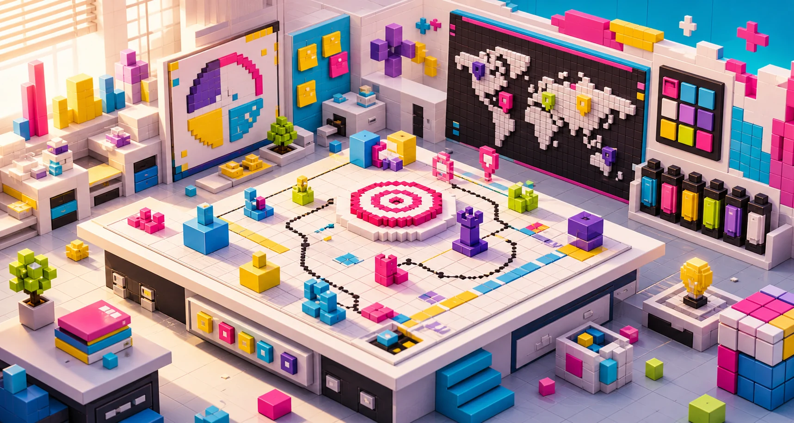

Clarity first
Before more traffic, the offer needs to be understandable, believable and easy to act on.
About Marmex

Why we exist
Marmex was created for businesses that need their digital presence to feel clearer, fresher and more convincing. We connect brand thinking, campaign ideas, website design and launch support so the market sees the business at its best.
Collaboration style
Good marketing needs judgment. We ask sharper questions, shape the offer with you and turn decisions into visible work: pages, campaigns, content and follow-up.
Before more traffic, the offer needs to be understandable, believable and easy to act on.
Visual choices should build trust, create recall and make the next step obvious.
A live website or campaign gives us real signals, and those signals guide the next improvements.
Best-fit clients
Clear language, bold visuals, practical scope, focused production and steady post-launch support.
Confident, creative and direct. Marmex sounds like a partner who understands both brand and business.
We connect the story, the campaign, the website and the follow-up, so the work feels like one system.
Work with Marmex